Getting started with cleanplots
cleanplots provides publication-ready defaults for ggplot2. The goal is professional-looking figures with strong data visualization and accessibility defaults, with no per-plot effort: a color palette that is colorblind-friendly and remains distinguishable when printed in black & white, matching marker shapes and line patterns that keep groups distinct across multiple visual channels, a clean theme, and consistent figure sizing. A companion cleanplots scheme for Stata uses the same design, so figures made in R and Stata look like siblings.
The package is layered: use as little or as much as you want. This vignette walks from the lightest touch (colors only) to the full setup (one call that changes everything).
Functions at a glance
cleanplots_defaults()– One call applies the full cleanplots setup for the session: theme, automatic colors (main palette for color, soft bar palette for fill), larger markers, thicker lines, and redgeom_smooth()fit lines. All sizes adjustable via arguments (e.g.,base_size = 16for presentations and lectures).scale_color_cleanplots()– Applies the cleanplots colors to a plot’scoloraesthetic; everything else is left unchanged. Options to reorder (order = c(7, 1, 2)) or reverse the palette.scale_fill_cleanplots(palette = "bars")– Applies the softer cleanplots colors to a plot’sfillaesthetic, designed for ink-heavy elements like bars, boxplots, and areas. Usepalette = "default"for the full-strength colors.scale_shape_cleanplots()– Applies the cleanplots marker symbols: hollow shapes for the dark colors, solid shapes for the light colors, so groups are distinguishable even without color.scale_linetype_cleanplots()– Applies the cleanplots line patterns in pairs (solid, solid, longdash, longdash, twodash, twodash, dashed, dashed, dotdash, dotdash), keeping line graphs readable in black & white and for colorblind readers.theme_cleanplots()– Applies the cleanplots look to a single plot: white background, dotted gridlines, gray axis lines, frameless legend at the right, and outlined facet strips.cleanplots_save()– Saves a figure at a fixed, publication-ready size (7 x 5 inches, 300 dpi) so plots look the same regardless of your plot window. Format follows the file extension.cleanplots_colors()– Returns the palette’s hex codes, all or by name (e.g.,cleanplots_colors("red", "navy")); addbars = TRUEfor the soft versions. Useful for coloring single elements manually.palette_cleanplots()– The palette generator behind the color scales; rarely called directly, but useful for feeding cleanplots colors into other packages.
library(ggplot2)
library(cleanplots)1. Colors only
If all you want is the cleanplots colors – leaving the theme, sizes, and everything else exactly as they were – add scale_color_cleanplots() (or scale_fill_cleanplots()) to a plot, just like any other palette package:
ggplot(iris, aes(Sepal.Length, Sepal.Width, color = Species)) +
geom_point() +
scale_color_cleanplots() +
theme_minimal()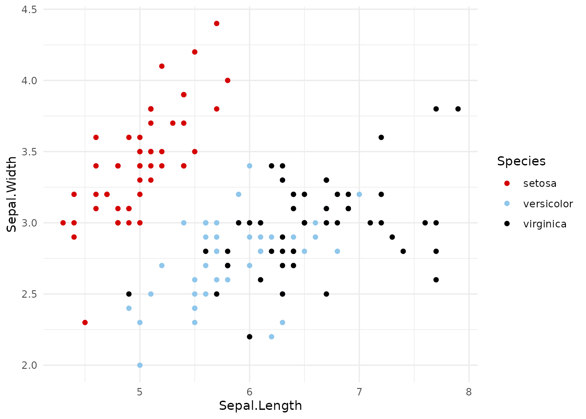
One recommendation: if you are not using the full cleanplots setup (theme_cleanplots() or cleanplots_defaults(), below), add theme_minimal() to your plots – the colors and markers are much easier to see against a white background than against ggplot2’s default gray. The examples in this vignette do this.
Both scales take the same options:
palette:"default"(the main colors) or"bars"(softer versions for bars, areas, and pies – more on this below)order: use the colors in a different order, e.g.order = c(7, 1, 2)starts with navyreverse: reverse the palette
ggplot(iris, aes(Sepal.Length, Sepal.Width, color = Species)) +
geom_point() +
scale_color_cleanplots(order = c(7, 1, 2)) +
theme_minimal()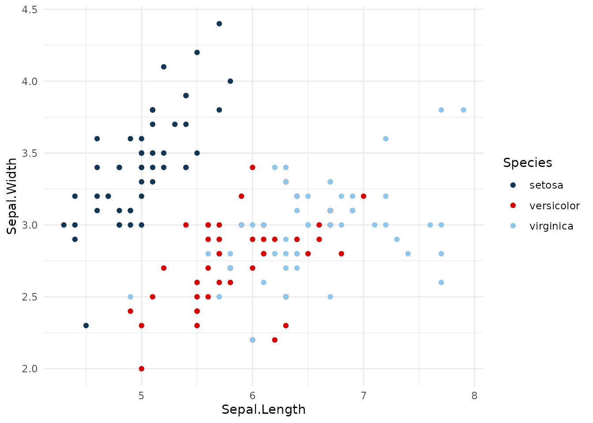
To use individual colors manually, cleanplots_colors() returns hex codes by name:
cleanplots_colors() red ltblue black gray purple pink navy ltgray
"#D50000" "#8FC6EB" "#000000" "#909090" "#740074" "#FFB3D9" "#143755" "#C0C0C0"
dkgray lavender
"#404040" "#D9D7F0"cleanplots_colors("red", "navy") red navy
"#D50000" "#143755"2. The two palettes
The main palette is used for markers, lines, and confidence intervals. It alternates darker and lighter colors so that the first several groups remain distinguishable even when printed in black & white, and it contains no red–green pair (red-green colorblindness is the most common form, affecting roughly 8% of men).
The bar palette contains softer versions of the same colors. Bars, areas, and pie slices use far more ink than points and lines, so full-strength colors overwhelm; cleanplots uses gentler fills for these elements:
titanic <- aggregate(Freq ~ Class + Sex, data = as.data.frame(Titanic), sum)
ggplot(titanic, aes(Sex, Freq, fill = Class)) +
geom_col(position = "dodge") +
scale_fill_cleanplots(palette = "bars") +
labs(x = NULL, y = "Passengers and crew", fill = "Class") +
theme_minimal()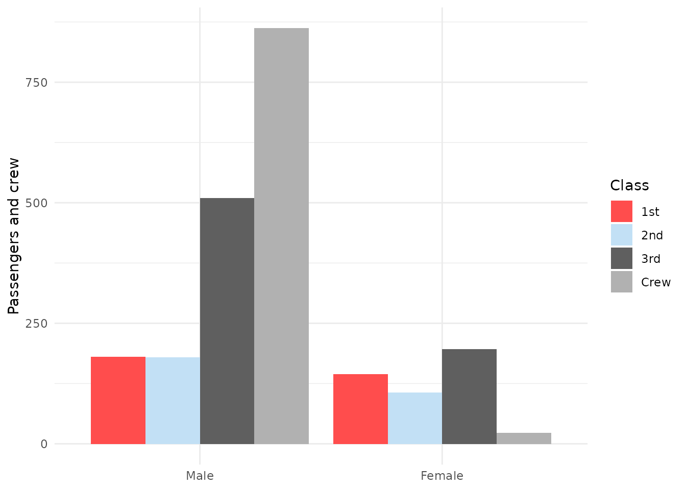
Ordinal categories: use viridis
The cleanplots palettes are for nominal (unordered) groups. For ordinal or ordered categories – Likert responses, education levels, dose groups – use a palette where lightness changes with the ordering (here, darker = higher), so the order itself survives colorblindness and black & white printing. We recommend cividis (Nunez, Anderton, & Renslow 2018), a variant of viridis (van der Walt & Smith 2015) optimized so that readers with red-green colorblindness see essentially the same palette as everyone else. It is built into ggplot2 (no extra package needed) and combines cleanly with all other cleanplots features:
ggplot(diamonds, aes(price, color = cut)) +
geom_density(linewidth = 0.65) +
scale_color_viridis_d(option = "cividis", end = 0.95, direction = -1) +
labs(x = "Price") +
theme_minimal()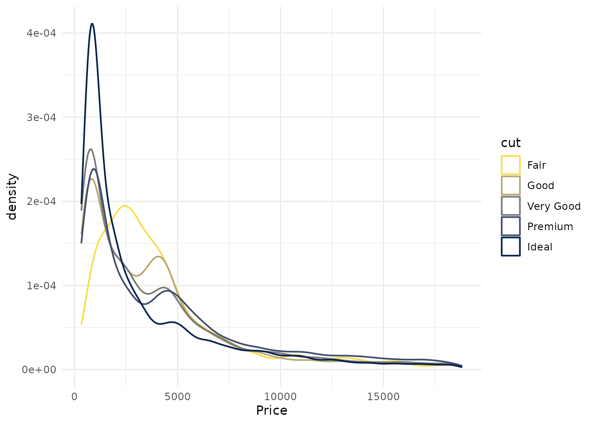
Two notes. First, end = 0.95 trims the palette’s lightest extreme so it remains visible against a white background (use begin = 0.05 instead if the dark end sits on a dark fill). Second, the cividis colors can be combined with the cleanplots shapes and/or linetype scales to ensure maximum ability to distinguish between different aspects of the graph. And if you have run cleanplots_defaults(), adding a viridis-family scale overrides the automatic cleanplots colors for that plot only – the theme, sizes, and everything else stay in place.
These are the same colors used by the ordinal cleanplots schemes for Stata (cleanplots3, cleanplots5, cleanplots7, cleanplots9, cleanplots11), so ordinal figures also match exactly across the two languages.
Nunez, J. R., Anderton, C. R., & Renslow, R. S. (2018). Optimizing colormaps with consideration for color vision deficiency to enable accurate interpretation of scientific data. PLOS ONE, 13(7), e0199239.
3. Shapes and line patterns
Color alone reliably distinguishes about 4–5 groups. Beyond that – and for black & white printing and colorblind readers – cleanplots varies multiple visual channels at once, so that no group pair ever depends on a single cue:
- Color and lightness: the palette alternates dark and light.
- Marker shape and fill:
scale_shape_cleanplots()gives hollow shapes (circle, square, triangle, diamond) to the dark colors and solid shapes to the light colors. - Line pattern:
scale_linetype_cleanplots()assigns patterns in pairs, ordered from closest to solid to furthest: solid, solid, longdash, longdash, twodash, twodash, dashed, dashed, dotdash, dotdash.
The assignments are coordinated: any two groups that share a shape or a line pattern always differ strongly in lightness, so every pair of groups is separated by at least two independent channels.
ggplot(mpg, aes(displ, hwy, color = class, shape = class)) +
geom_point(size = 1.4, stroke = 0.7) +
scale_color_cleanplots() +
scale_shape_cleanplots() +
theme_minimal()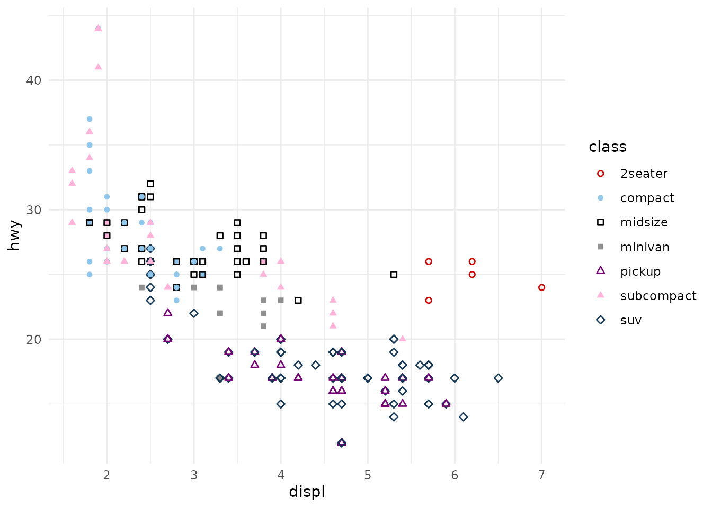
cities <- c("Collin County", "Austin", "Dallas", "Corpus Christi",
"Wichita Falls")
tx <- aggregate(median ~ year + city, mean, na.rm = TRUE,
data = subset(txhousing, city %in% cities))
ggplot(tx, aes(year, median / 1000, color = city, linetype = city)) +
geom_line(linewidth = 0.65) +
scale_color_cleanplots() +
scale_linetype_cleanplots() +
labs(x = NULL, y = "Median home price ($1,000s)", color = "", linetype = "") +
theme_minimal()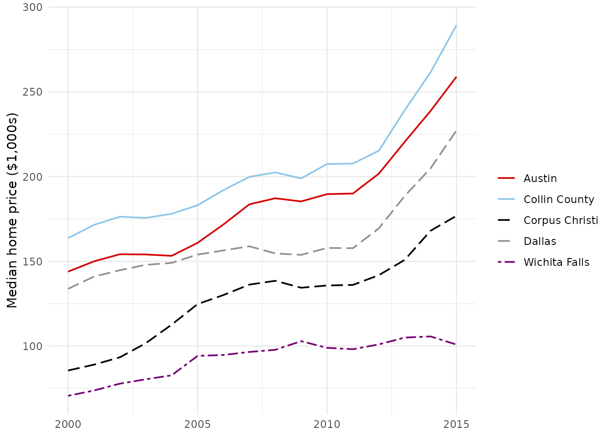
4. The theme
theme_cleanplots() applies the cleanplots layout: white background, no plot border, light gray axis lines, dotted gridlines, a frameless legend at the right, and black-outlined facet strips. Like any ggplot2 theme, add it per plot:
ggplot(mpg, aes(displ, hwy, color = class, shape = class)) +
geom_point(size = 1.4, stroke = 0.7) +
scale_color_cleanplots() +
scale_shape_cleanplots() +
theme_cleanplots()
5. The full setup: cleanplots_defaults()
Adding scales and themes to every plot gets repetitive. One call at the top of your script applies the complete cleanplots setup for the session:
cleanplots_defaults()After this, with no scales or theme added:
- every plot uses
theme_cleanplots(); - discrete
coloraesthetics use the main palette, and discretefillaesthetics use the softer bar palette (bars and areas automatically get the gentler colors); - points have heavier outlines (
size = 1.4,stroke = 0.7), so the hollow marker shapes are clearly visible; - lines are thicker (
linewidth = 0.65) forgeom_line(),geom_path(),geom_step(),geom_density(),geom_function(), andgeom_smooth(); error bars, linereanges, and pointranges use 80% of that; geom_smooth()fit lines are cleanplots red with a light gray confidence band, instead of ggplot2’s blue.
ggplot(mpg, aes(displ, hwy, color = class, shape = class)) +
geom_point() +
scale_shape_cleanplots()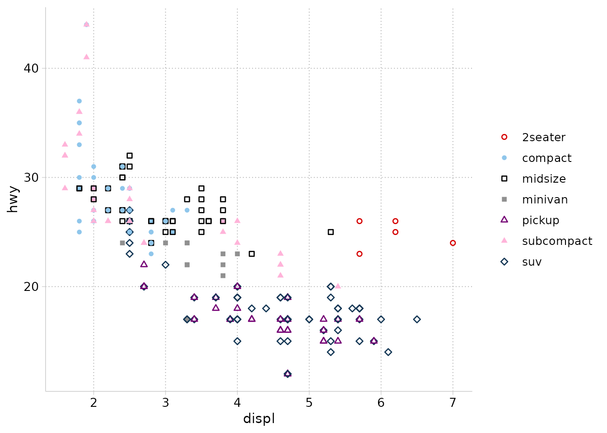
ggplot(mpg, aes(displ, hwy)) +
geom_point(color = cleanplots_colors("gray")) +
geom_smooth(method = "loess", formula = y ~ x)
All settings are arguments if you prefer different sizes:
cleanplots_defaults(base_size = 12, point_size = 1.4,
point_stroke = 0.7, line_width = 0.65,
smooth_color = "#D50000")The default text size (12) is chosen to match the body text of an academic article when the figure is saved at the recommended size (see the next section): if you can read the article, you can read the graph. For contexts that need bigger text – presentations and lectures especially – increase it:
cleanplots_defaults(base_size = 16) # presentations and lecturesOne important exception: ggplot2 only provides session-default hooks for color and fill scales, so shape and linetype scales cannot be applied automatically – there is no equivalent mechanism for them. Whenever you map shape or linetype to a variable, add scale_shape_cleanplots() or scale_linetype_cleanplots() to that plot. This matters in particular for 7+ groups: ggplot2’s built-in shape scale handles a maximum of 6 shapes and silently drops the markers for additional groups, while scale_shape_cleanplots() provides 10.
Everything remains overridable per plot: an explicit scale, theme, or aesthetic always wins. For example, to use the main palette for a fill instead of the automatic bar palette:
ggplot(titanic, aes(Sex, Freq, fill = Class)) +
geom_col(position = "dodge") +
scale_fill_cleanplots(palette = "default") +
labs(x = NULL, y = "Passengers and crew", fill = "Class")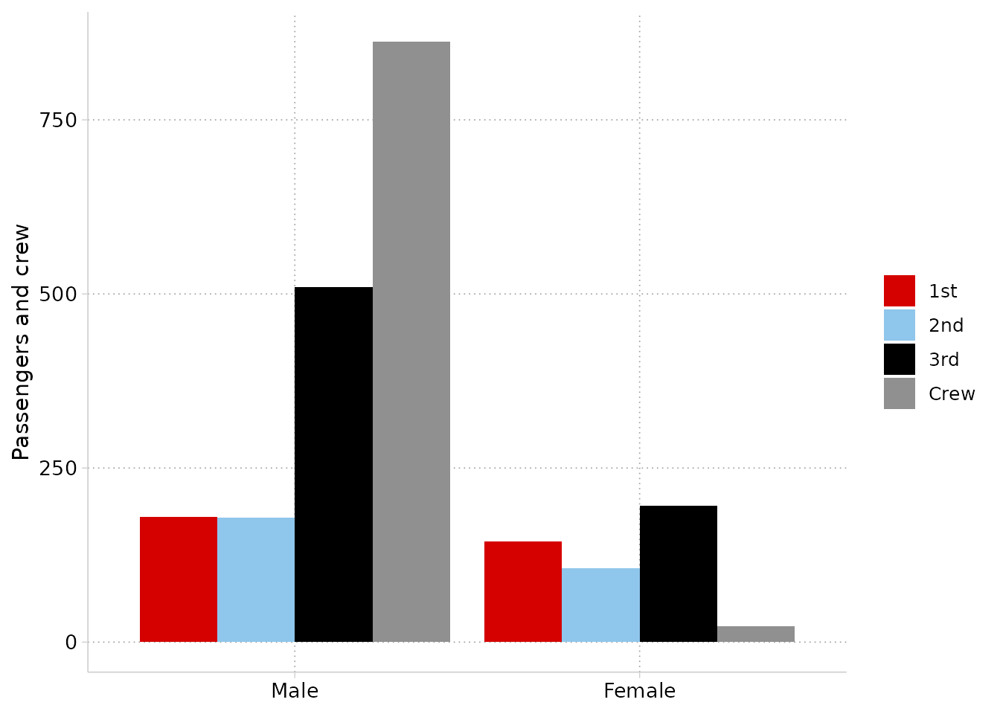
To restore ggplot2’s defaults: cleanplots_defaults() sets session-wide state, which persists until you restart R. To reset manually:
theme_set(theme_gray())
options(ggplot2.discrete.colour = NULL, ggplot2.discrete.fill = NULL)
update_geom_defaults("point", list(size = 1.5, stroke = 0.5))6. Saving figures
An important quirk of ggplot2: a plot has no intrinsic size. Text, markers, and lines are physical units (points and millimeters), and ggsave() without explicit dimensions saves at whatever size your plot window happens to be – so the same code produces figures with different proportions on different days, machines, and window layouts.
The fix is to always save at explicit dimensions. cleanplots_save() does this with tuned defaults – 7 x 5 inches at 300 dpi:
p <- ggplot(mpg, aes(displ, hwy, color = drv)) + geom_point()
cleanplots_save("my-figure.png", p)Why 7 x 5? It matches the default figure size of R Markdown (HTML) documents, and a 7-inch figure placed at the 6.5-inch text width of a US-letter manuscript scales the 12-point default text to about 11 points – comparable to the article’s body text. The file extension sets the format, so .pdf, .tiff, or .eps for journal submission systems work directly. Override any default as needed:
cleanplots_save("slide-figure.png", p, width = 10, height = 5.6)The same principle applies to other ways of saving:
ggsave()directly: always passwidth,height, anddpi.- RStudio’s Export button: type explicit dimensions in the dialog (e.g., 2100 x 1500 pixels = 7 x 5 inches at 300 dpi) rather than accepting the window size.
- R Markdown / Quarto: figures are sized by chunk options, which is already fixed-size by construction. To match
cleanplots_save():knitr::opts_chunk$set(fig.width = 7, fig.height = 5)(orfig-width/fig-heightin Quarto). Note thatpdf_documentdefaults to 6.5 x 4.5 – article text width – which also works well. - Base devices (
png()…print(p)…dev.off()): pass dimensions to the device call.
Avoid copy-pasting figures from the plot window into Word or PowerPoint: the result is window-sized and screen-resolution.
7. Plots of predictions and marginal effects
cleanplots works out of the box with the marginaleffects and modelsummary packages. With cleanplots_defaults() set, their plots pick up the colors and theme automatically.
The examples below use data on life satisfaction across ages:
sim <- readRDS(url(
"https://raw.githubusercontent.com/tdmize/data/master/data/sim_lifesat.rds",
open = "rb"))A coefficient plot of nested models with modelsummary::modelplot():
mod1 <- lm(lifesat ~ age + educ, data = sim)
mod2 <- lm(lifesat ~ age + educ + married, data = sim)
modelsummary::modelplot(list("Baseline" = mod1, "+ Marriage" = mod2),
coef_omit = "Intercept") +
geom_vline(xintercept = 0, linetype = "dashed", color = "gray50") +
labs(x = "Coefficient estimates and 95% confidence intervals")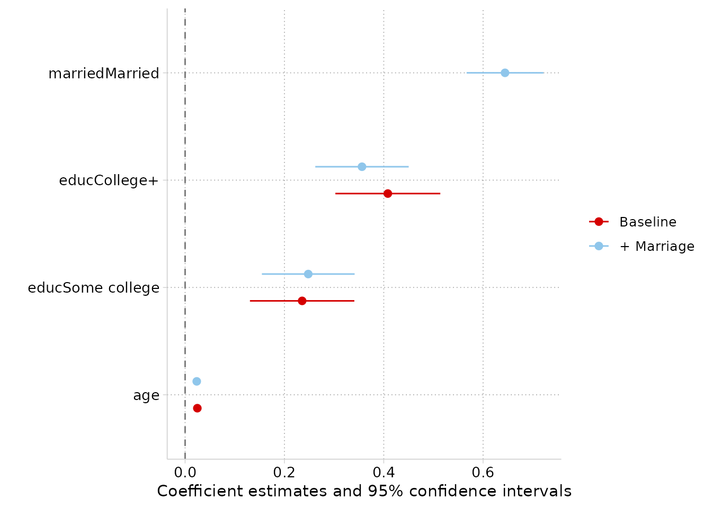
Adjusted predictions for a nominal predictor with marginaleffects::plot_predictions():
mod <- lm(lifesat ~ poly(age, 2) * married + educ, data = sim)
marginaleffects::plot_predictions(mod, condition = c("educ", "married")) +
labs(y = "Predicted life satisfaction")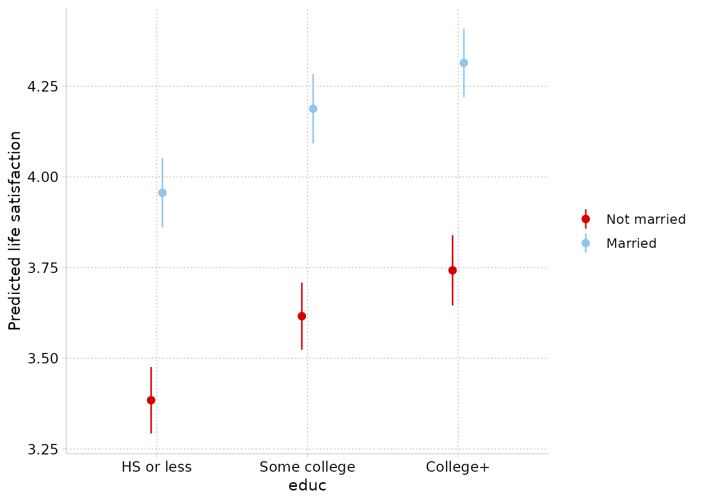
Predictions across a continuous predictor by group. One note here: plot_predictions() draws its confidence-interval ribbons with heavy transparency (alpha = 0.1), which is tuned for saturated colors. Add scale_fill_cleanplots(palette = "default") so the ribbons use the full-strength palette rather than the soft bar colors:
marginaleffects::plot_predictions(mod, condition = c("age", "married")) +
scale_fill_cleanplots(palette = "default") +
labs(y = "Predicted life satisfaction")
For full control of the ribbons (or anything else), use plot_predictions(..., draw = FALSE) to get the plotting data and build the figure yourself:
pr <- marginaleffects::plot_predictions(
mod, condition = c("age", "married"), draw = FALSE)
ggplot(pr, aes(age, estimate, color = married, fill = married)) +
geom_ribbon(aes(ymin = conf.low, ymax = conf.high),
alpha = .35, color = NA) +
geom_line() +
labs(y = "Predicted life satisfaction")
And comparisons – here, the marriage gap in life satisfaction across ages – with marginaleffects::plot_comparisons():
marginaleffects::plot_comparisons(mod, variables = "married",
condition = "age") +
geom_hline(yintercept = 0, linetype = "dashed", color = "gray50") +
labs(y = "Difference in predicted life satisfaction\n(Married - Not married)")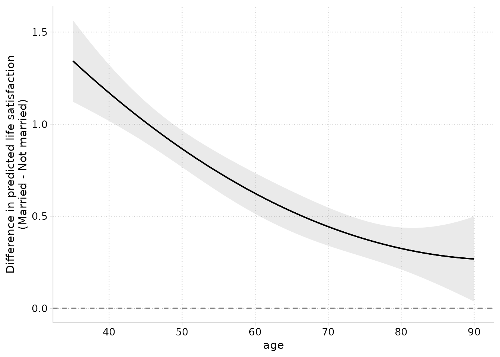
8. For Stata users
A companion cleanplots scheme for Stata shares this package’s colors, marker symbols, line patterns, and layout – the hex values in both languages are computed from the same definitions, so colors match exactly. The mapping:
| Stata | R |
|---|---|
set scheme cleanplots |
cleanplots_defaults() |
p1–p10 colors |
scale_color_cleanplots() |
p1bar–p10bar colors at intensity bar 70 |
scale_fill_cleanplots(palette = "bars") |
marker symbols (symbol p1 …) |
scale_shape_cleanplots() |
line patterns (linepattern p1line …) |
scale_linetype_cleanplots() |
| scheme layout settings | theme_cleanplots() |
| graph export sizing | cleanplots_save() |
The Stata scheme is available at https://www.trentonmize.com/software/cleanplots.